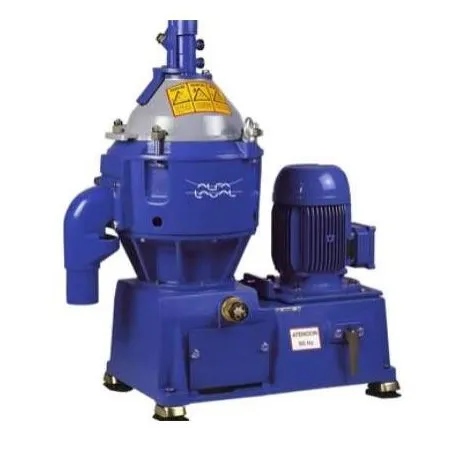

Engineered for marine and power station duties. Solid-wall centrifugal technology providing efficient purification and clarification of mineral oils.
The MMB series (MMB 304, 305) contains the industry's most reliable belt-driven centrifugal separators. Designed to handle distillates, marine diesel oils, and lubricating oils, these units are the backbone of many shipboard and remote power generation facilities.
With a focus on ease of installation and low maintenance, MMB separators feature a large sludge space that extends operating periods between manual cleanings—saving operational time and reducing lifecycle costs.

Eliminates the need for a downstream pump by providing pressurized discharge of the clean oil phase.
Reduced weight and small footprint make it ideal for retrofitting into crowded engine rooms.
Simplifies maintenance and provides smooth, reliable power transmission with minimal noise and vibration.
The preferred choice for mineral oil treatment:
Ensure the longevity of your engines and turbines with reliable, proven separation technology from Brigantine.